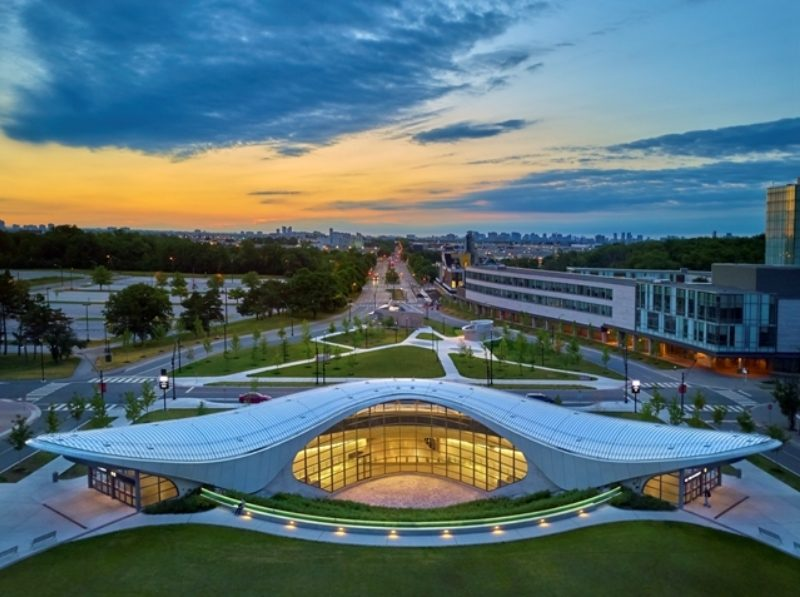

CASCATO 2024
June 3-6, 2024
co-hosted by University of Toronto & York University
co-hosted by University of Toronto & York University
| Home | Dates | Registration | Program | Accommodation | Directions | Code of Conduct |
The annual meeting of the Canadian Astronomical Society is being held in Toronto in the beautiful Sheraton Toronto Centre. The meeting is co-hosted by York University and the University of Toronto.
|  |

|